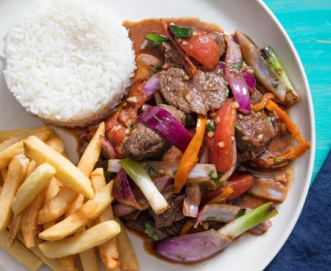

Lomo Saltado

Description:
Lomo Saltado is a staple in Peruvian cooking. It can be found filling the air of any home across the country with the delightful aromas of onions, peppers and succulent beef. Typically this dish is commonly served with rice and and either fries or potatoes. Enjoy a taste of Peru!
-Ingredients-
- 1 pound beef tenderloin, skirt steak, or other tender and flavourful quick-cooking steak
- 1/4 cup peanut, canola, or vegetable oil, divided plus more if needed
- Salt
- 1 medium red onion, cut into 1/2-inch slices
- 4 scallions, roots and any wilted parts trimmed, remainder cut into 2-inch lengths
- 1 fresh aji amarillo steamed, seeded, and sliced lengwise into matchsticks
- 2 medium plum tomatoes, cored and cut into 3/4-inch-thick wedges
- 2 medium cloves of garlic, minced
- 1-inch piece of peeled fresh ginger, minced
- 1 tablespoon plus 1 teaspoon soy sauce
- 1 tablespoon apple cider vinegar
- 2 tablespoons minced fresh cilantro leaves and tender stems
- Freshly gound black pepper
- Yuca fries
- Cooked long-grain rice, for serving
Instructions:
- Cut the beef across the grain into roughly 1/2-inch-thick strips.
- In a wok or large cast iron or stainless steel skillet, heat 2 tablespoons (30ml) oil over high heat until heavily smoking. Meanwhile, season beef all over with salt.
- Working in batches, add just enough beef to the pan to sear it heavily without steaming in its own juices. Spread the beef around so the pieces are evenly spaced apart and allow to cook until very well seared and charred on one side, 30 seconds to 1 minute. Stir and toss beef so that it cooks all over, about 30 seconds longer; if you are working over a gas flame and aren't afraid of some fire, toss the beef near the flame so that the oil briefly combusts in big bursts. (If this makes you nervous, don't allow it to catch fire. Instead, manage the heat to prevent flare-ups.) Using a spatula, transfer beef to a platter to rest. Repeat with remaining beef, always getting the pan smoking-hot before the next batch and adding more oil if needed.
- When all the beef is cooked, return the empty pan to high heat. Add 1 tablespoon (15ml) oil and heat until smoking. Working in batches, add just enough red onion so that it sears and browns rapidly without steaming, about 30 seconds. Toss a few times until the onion is crisp-tender. Using a spatula, transfer onion to a platter. Repeat with remaining onion, always heating the pan until smoking first and adding more oil if necessary.
- Return the empty pan to high heat, add 1 tablespoon (15ml) oil, and heat until smoking. Working in batches if necessary, add scallions and cook, without stirring, until seared on bottom side, about 30 seconds. Push scallions to the side and add peppers. Cook until seared, about 30 seconds longer.
- Push scallions and peppers to the side and add tomatoes to the pan, allowing them to sear on one side, about 30 seconds. (If your burner isn't very strong, you can remove the scallions and peppers from the pan before adding the tomatoes to guarantee good searing. Otherwise, leave them in.) Try not to let the tomatoes grow too soft and pulpy; it's better that they retain their shape rather than brown to the point of becoming mushy.
- Add garlic and ginger and cook, tossing and stirring constantly, until lightly sautéed and fragrant, about 15 seconds. Add soy sauce and vinegar and toss to combine.
- Return beef and all accumulated juices to the pan along with the red onions. (If you've removed the scallions and peppers, add them back now, too.) Add cilantro. Toss over high heat to combine well, seasoning with salt and pepper as you go. Remove from heat.
- Spoon stir-fry onto plates with a mound of cooked rice and French fries and serve right away.
Note:Aji amarillo may be hard to find in which case fresh bell pepper or sweet peppers may be substituted.